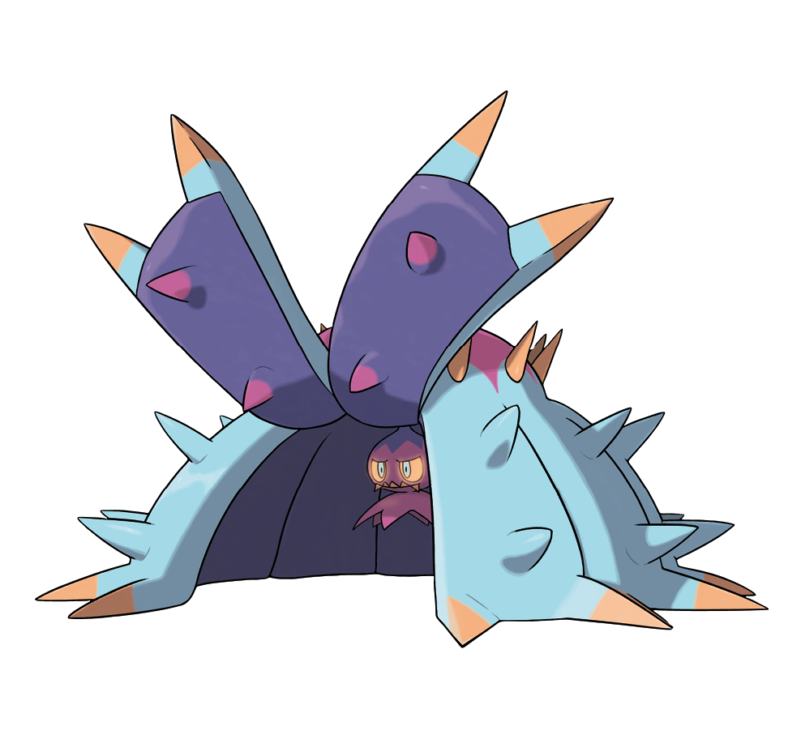

Toxapex is my favorite Pokemon to use in competitive battles. It isn't the cutest Pokemon out there, but honestly, why be cute when you can be a damn near un-killable wall. Toxapex's strength lies in its huge defensive stats. Its signature move, Baneful Bunker, protects Toxapex from all damage for a single turn. On top of that, Baneful Bunker also poisons attackers that use contact moves (Ex: Thunder Punch). Toxapex can then take advantage of poisoned foes with its ability, Merciless. Merciless allows Toxapex to always get a critical hit on poisoned oponents. (The normal critical hit rate is ~24%) Toxapex also has access to Recover, a move that heals the user by 50% of their maximum HP. The nickname 'Bunker' comes from Toxapex's ability to take almost any hit and, more obviously its signature move.
© 2021 Midterm Project: My Ideal Pokemon Team